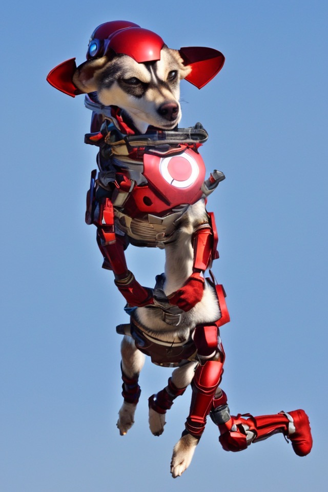

SHRMI
2022
Virtual Animal Profile
Generated with a Fine-tuned Stable Diffusion Model


https://www.instagram.com/shroomdiffusion/
METAVERSE, SNS & PET PROFILES
The term "metaverse" is mainly used to refer to an immersive 3D world. In virtual worlds and metaverses, users interact with each other through their virtual avatars. So, what about social media platforms like Instagram? Users curate their profile feeds with posts they want, and record what they are currently doing through ephemeral "Stories." We press the heart button and leave comments on these recorded images, and send direct messages, interacting with others with a sense of identity within the world of Instagram. What are the relationships between individuals in the Instagram world and in real life? In this world, how do personal and interpersonal relationships function? In the hyper-connected society of Instagram, people quickly and easily encounter others' images (which comprise their identity). There is a sense of intimacy between individuals and their images.What about social media accounts for pets? Pets don't take pictures of themselves and upload them to their own profiles - this is the owner's realm. Even though people are aware of this fact, they interact with the pet's image emotionally, not simply accepting the image of the pet in the world of Instagram but interacting with it. In this way, an online identity is assigned to the pet, regardless of their wishes. So, what do people interact with in this world - with beings that exist in reality or with online entities? Are online entities the windows to the world of real-life entities? What are people interacting with to feel a sense of intimacy and connection? Are real-life entities being forgotten?
METAHUMAN… METAANIMAL?
Jongmin is the owner of a lovely dog named Shroomie and is a researcher/artist who experiments with AI in artistic forms. As part of the Stable Diffusion experiment, a text-to-image model, Jongmin used the fine-tuned model Dreambooth to train 1,200 pictures of Shroomie with the word "SHRMI" in Stable Diffusion.Shroomie, who is about to turn two years old, may be a scared princess puppy, but SHRMI can be anything. With infinite possibilities, SHRMI boasts a single profile on Instagram in the world of metaverse.
(https://www.instagram.com/shroomdiffusion/)
People like SHRMI, who can become the protagonist of famous sci-fi action movies, a DJ, a video game hero, or a protagonist in famous paintings. However, nobody can meet SHRMI in the real world. Nevertheless, SHRMI is familiar to people.
SHRMI exists in the metaverse.
SHRMI exists in people's cognitive systems.